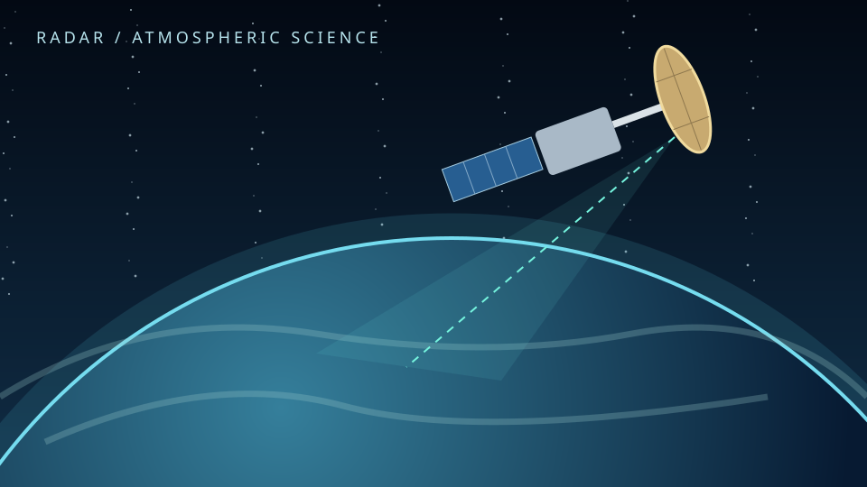
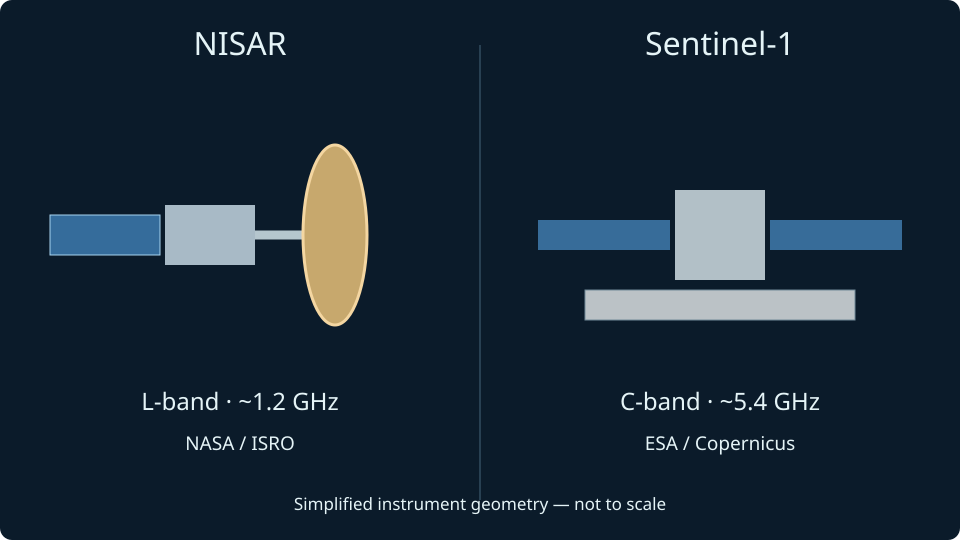
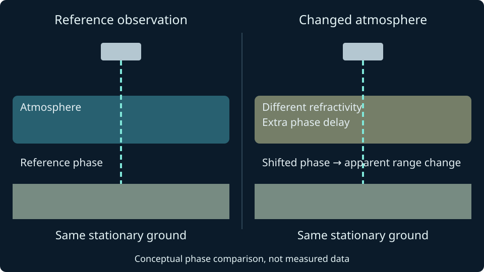

Science & Technology / Radar & sensor technology · Foundational research
Can Earth's Atmosphere Fool Satellite Radar?
When two radar systems agree, could the atmosphere be responsible for the apparent movement?

The puzzle
Independent instruments can share environmental interference.
The evidence
Peer-reviewed satellite observations across four regions.
The limit
Surface stability is an assumption, not a universal conclusion.
When seeing isn't necessarily believing
Imagine two satellites reporting a similar pattern of apparent ground movement. Surely that makes the movement real? Not necessarily. Both instruments are looking through the atmosphere. The same environment can leave a similar imprint on separate signals.
This is an illustrative scenario, not a claim that every surface in the study was independently proven stationary. It raises a question that matters whenever we interpret an unusual observation: what exactly did the instrument measure?
The invisible obstacle
Interferometric synthetic aperture radar, or InSAR, compares the phase of radar echoes collected on different passes. Phase is the position within a wave cycle. Changes can reveal motion along the instrument's viewing direction, but a changing atmosphere also alters the phase. Water vapor and other variations in air refractivity contribute to that effect; charged particles in the ionosphere present another challenge.

Two satellites, one scientific puzzle
NISAR and Sentinel-1 use different radar wavelengths. The researchers compared repeat-pass measurements made over four regions, with corresponding satellite acquisitions roughly ten minutes apart. That creates an opportunity to examine nearly the same atmospheric conditions with separate instruments.

What the researchers discovered
After ionospheric correction, several paired images had spatial correlations above 0.9. One comparison in the Andes was much weaker, at 0.32. The authors interpret much of the shared pattern as lower-atmosphere delay, assuming little ground deformation during each 12-day interval. Existing weather-model corrections sometimes missed structures visible in the radar data.
Correlation is a measure of pattern similarity, not a percentage of accuracy. The differing results are a reminder that agreement is not automatic and does not independently establish the cause of the signal.
What does this mean for UAP investigations?
When different sensors appear to agree about unusual motion, investigators should still ask whether they are affected by a shared environment, whether their geometry and calibration are known, and whether another measurement can independently check the interpretation. Our research record on kinematic inference explores a related but different problem: reconstructing physical velocity from airborne video.
The bigger picture
Independent instruments are tremendously valuable. Their agreement can reveal a real feature of the environment, even when that feature is not the target originally being measured. The challenge is to separate the object's behavior from the behavior of the signal that reveals it.
Explore the technical research, evidence and limitations
Method: Comparison of NISAR L-band and Sentinel-1 C-band interferograms, after ionospheric correction, across four geographic regions. The analysis uses 12-day repeat-pass intervals.
Limitations: A limited early NISAR dataset, assumptions about surface stability, residual ionospheric effects, differing viewing geometries and processing uncertainty. Independent ground measurements and longer time series could help separate deformation and atmospheric effects.
Evidence status: Peer-reviewed observational research; an initial demonstration rather than a comprehensive operational atmospheric retrieval system.
Continue the Investigation
Research behind this story
Oveisgharan, S., Rosen, P., Wells, C., & Havazli, E. (2026). Assessing Co-Located NISAR and Sentinel-1 Observations for Atmospheric Characterization. Journal of Geophysical Research: Atmospheres, 131, e2026JD047910. Published October 9, 2026. Primary source · Knowledge-graph record.
Editorial standard: Lead with curiosity. Explain with clarity. Support with evidence.